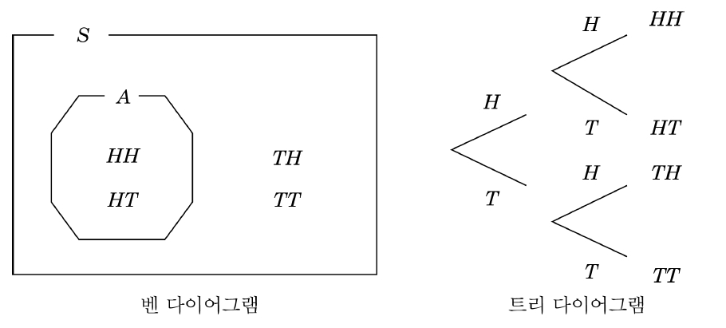
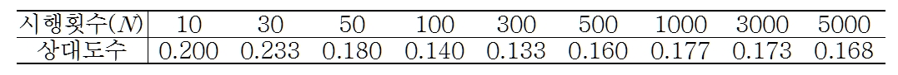
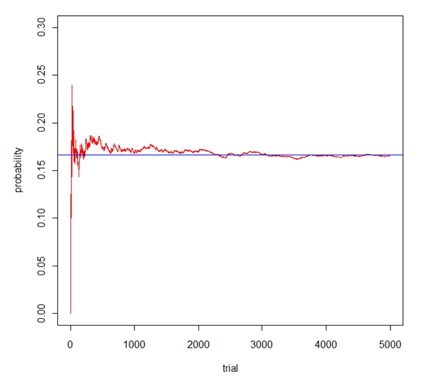
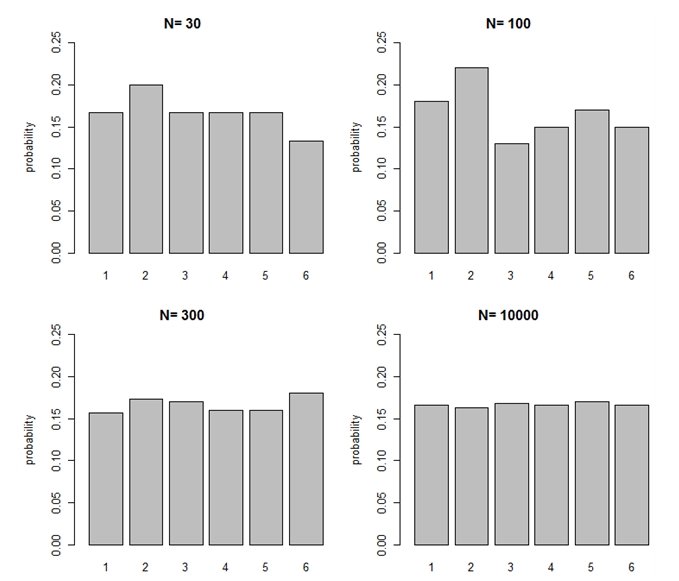
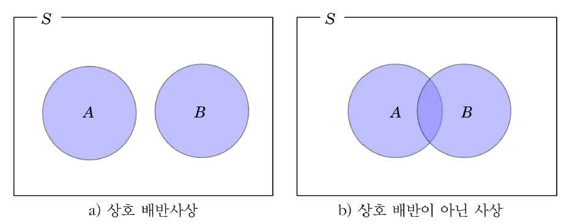
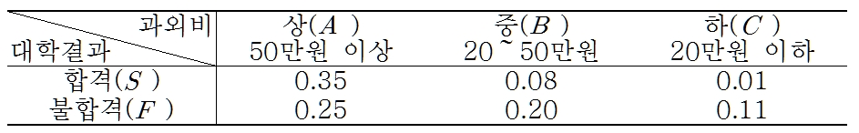
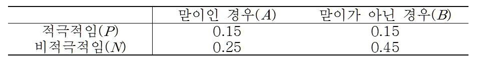
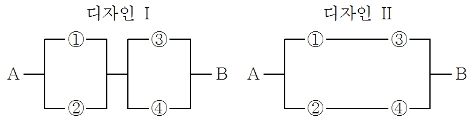
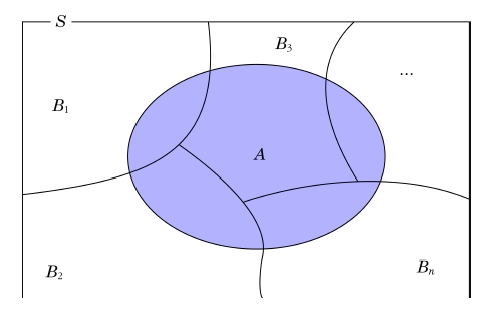

Chapter 3 확 률
귀납적 방법 - 표본 정보에 근거하여 우리가 모르는 모집단의 특성에 관해 추론
연역적 방법 - 알고 있는 모집단에서 추출된 표본의 특성을 추론
확률은 불확실한 정도를 나타내며, 불확실성하에서 결정을 할 때, 확률에 관한 이론은 필수적이며 통계적 추론의 근간이 됨
본 장에서는 확률이론 중 가장 기본이 되는 사상과 표본공간, 확률이론, Bayes 정리 등에 관하여 설명함
3.1 사상과 표본공간
3.1.1 사상과 표본공간
무작위 실험 또는 확률 실험(random experiment)이란 시행하기 전에는 확실히 예측할 수 없는 결과를 유발하는 행위 또는 과정을 말한다.
확률실험 - 한 번의 실험에서 나타나는 결과는 우연에 의해 나타나게 되며, 동일한 조건하에서 반복이 가능한 실험
표본점(sample point) - 무작위 실험의 근원이 되는 결과를 의미하며, 근원사상(elementary event) 혹은 단일사상이라 함
동전(coin) : 앞(\(H\)), 뒤(\(T\))
주사위(die) : \(1, 2, 3, 4, 5, 6\)
표본공간(sample space)이란 어떤 실험에서 발생 가능한 모든 단일 사상들의 집합이다.
보통 \(S\)로 표기하며 공사상 역시 표본공간에 포함됨
공사상(null event) - 근원사상을 하나도 갖고 있지 않는 공집합(\(\emptyset\))
coin : \(S=\{\)앞면, 뒷면\(\}\)
die : \(S=\{1, 2, 3, 4, 5, 6\}\)
사상(event)이란 하나 또는 둘 이상의 단일사상의 집합을 말한다.
복합사상(compound event) - 단일사상의 집합
보통 사상이라 함은 단일 사상과 복합사상 두 가지 모두를 의미함
표본공간은 단일사상의 집합이므로 사상은 표본공간의 부분집합임
동전을 두 번 던져서 나오는 결과를 관찰하는 실험을 생각해 보자.
이 실험의 표본공간을 나타내라.
a)의 표본공간을 밴 다이어그램으로 표시하고, 첫 번째 동전을 던질 때 앞면이 나오는 사상을 \(A\)라고 할 때 이 사상을 벤 다이어그램에 부분집합으로 표시하라.
(풀이)
앞면이 나오는 사상 : \(H\), 뒷면이 나오는 사상 : \(T\)
\(S=\{(H,H), (H,T), (T,H), (T,T)\}\)
벤 다이어그램 및 트리다이어그램

여사상(complement) - 사상 \(A\)의 여사상은 사상 \(A\)가 발생하지 않는 사상. 즉, 사상 \(A\)에 포함되지 않는 표본점으로 이루어진 사상을 의미
사상 \(A\)의 여사상을 \(\bar{A}\) 또는 \(A^{c}\)로 나타내며, \(A \cup \bar{A} = S\)가 성립
3.2 확 률
3.2.1 고전적 개념
확률은 어떤 사상의 발생 가능성을 의미
고전적 개념의 확률
- 어떤 실험에서 발생 가능한 모든 단일사상들이 \(n\)개 존재하고 각 단일사상들이 발생할 가능성이 모두 같다고 할 때, 사상 \(A\)가 \(k\)개의 단일 사상들로 구성되어 있다면, 사상 \(A\)의 확률이 \(k/n\)라고 정의. 즉, 각 실험의 결과는 \(1/n\)의 확률이 부여됨
임의의 사상 \(A\)에 대하여 \[P(A)=\frac{\text{사상 } A\text{에 속하는 단일사상수}}{\text{표본공간 전체 단일사상수}}=\frac{N(A)}{N(S)}\]
주사위를 던져서 홀수 눈이 나오는 사상의 확률
\(S=\{1, 2, 3, 4, 5, 6\},\hskip5pt A=\{1, 3, 5\}\), 홀수 눈이 나올 확률은 \(3/6=1/2\)
3.2.2 상대도수적 개념
- 실험을 무한히 반복할 경우 얻어지는 사상의 상대도수의 극한값으로 확률을 정의
임의의 사상 \(A\)에 대하여 \[P(A)=\lim_{N \rightarrow \infty} \frac{n}{N}\] 여기서 \(N\)은 실험의 총 시행횟수이고 \(n\)은 사상 \(A\)가 발생한 횟수이다.
상대도수적 개념에 의한 확률계산은 반복실험을 충분히 많이 시행해야 한다는 전제조건을 만족해야 함. 그러나 충분한 실험횟수에 대한 기준이 명확하지 않은 문제가 있음
주사위 실험에서 1의 눈이 나올 상대도수


주사위 실험에서 각 눈의 상대도수

3.2.3 주관적 개념
어떤 사상에 대해 자신의 지식, 경험, 정보에 의해 자기 스스로 그 사상이 일어날 가능성을 판단하여 확률을 부여
주관적 개념의 확률의 예
스포츠 경기에서 특정한 팀이 승리할 확률
어떤 회사의 주식이 1년 이내에 2배가 될 확률
문제점
- 고전적 개념과 상대도수적 개념은 어떤 사상에 대해 누구든지 똑같은 확률을 갖게 된다는 점에서 객관적이라고 할 수 있음. 그러나 주관적 개념은 하나의 사상에 대해 사람마다 제각기 다른 확률을 가질 수 있으므로 객관성이 결여됨
3.2.4 확률의 공리
임의의 사상 \(A\)에 대하여
\(0 \le P(A) \le 1\)
\(P(S)=1\)
서로 배반인 사상열 \(A_i\), \(i=1, 2, \ldots\)에 대하여,
\[P(A_1 \cup A_2 \cup A_3 \cup \cdots)=\sum_{i=1}^{\infty} P(A_i)\]
상호 배반(mutually exclusive) 사상 - 동시에 발생할 수 없는 사상
만약 사상 \(A\)와 사상 \(B\) 가 배반 사상이면 두 사상은 서로 공통요소를 갖고 있지 않으며 두 사상의 교집합은 공집합임(\(A \cap B=\emptyset\) )
\(A_1, A_2, A_3, \ldots\)를 표본공간 \(S\)의 부분집합이라 할 때, 어떠한 임의의 두 개의 사상도 공통원소를 가지지 않는다면(모든 \(i, j\)에 대해 \(A_i \cap A_j=\emptyset(i \ne j)\)), 사상 \(A_1, A_2, A_3, \ldots\)는 상호 배반이라고 함

주사위 한 개를 던지는 실험에서 다음의 사상을 고려하여 사상 \(A\)와 \(B\)가 상호 배반인지 그리고 사상 \(A\)와 \(C\)도 상호 배반인지 밝혀라.
\(A\): 짝수 눈이 발생하는 사상
\(B\): 홀수 눈이 발생하는 사상
\(C\): 4이하의 눈이 발생하는 사상
(풀이)
\(A=\{2, 4, 6\}\)
\(B=\{1, 3, 5\}\)
\(C=\{1, 2, 3, 4\}\)
\(A \cap B=\emptyset, \,\,\, A \cap C=\{2, 4\}\)
따라서 \(A\)와 \(B\)는 배반이며 \(A\)와 \(C\)는 배반이 아니다. 따라서 사상 \(A\), \(B\), \(C\)는 상호배반이 아니다.
3.3 조건부 확률
한 사상의 발생이 다른 사상의 발생 확률에 영향을 미치게 되면 두 사상은 서로 통계적으로 종속되어 있다고 함
조건부 확률(conditional probability)
- 종속관계에 있는 두 사상을 \(A\)와 \(B\)라고 할 경우, 첫 번째 사상 \(A\)가 이미 일어났다는 전제하에서 두 번째 사상 \(B\)가 발생할 확률을 조건부 확률이라고 하며 \(P(B|A)\)로 표기
조건부 확률 \(P(B|A)\) - "사상 \(A\)가 일어났을 때 사상 \(B\)가 발생할 확률"
- 표본공간을 실험 결과들의 모임이 아닌 사상 \(A\)로 한정한다는 의미
사상 \(A\): 4이상이 나오는 사상
사상 \(B\): 짝수가 나오는 사상
주사위를 한번 던져서 4이상(사상 \(A\))이 나올 것이라는 사실을 알고 있다는 전제하에서 짝수(사상 \(B\))가 나올 확률 즉, \(P(B|A)\)는 얼마인가?
(풀이)
표본공간 \(S=\{1, 2, 3, 4, 5, 6\}\).
이 때 4이상의 수가 나온다는 것을 알고 있다는 사실을 전제로 하고 있기 때문에 \(S\)대신 \(A=\{4, 5, 6\}\)만 고려하면 됨
조건부 확률은 사상 \(A\)를 전체 표본공간인 것으로 축소하여 생각한 확률이며, 이를 축소된 표본공간(reduced sample space)이라 함
축소된 표본공간 \(A\)의 원소 중 짝수는 4와 6이므로 \[P(B|A)=\frac{2}{3}\]
표본공간 \(S\)를 이용하여 \(P(B|A)\)를 구하는 방법 \[P(B|A)=\frac{2}{3}=\frac{2/6}{3/6}=\frac{P(A \cap B)}{P(A)}\]
위의 예에서 \(P(B)=\frac{3}{6}=\frac{1}{2},\hskip5pt P(B|A)=\frac{2}{3}\)이었음. 즉, 사상 \(B\)의 확률이 사상 \(A\)의 발생으로 인해 영향을 받았음을 알 수 있음
\[정의 3.7\] 사상 \(A\)가 주어져 있을 때 사상 \(B\)가 일어날 조건부 확률은 \(P(B|A)\)로 표시하며 \(P(A)>0\)라면 \[P(B|A)=\frac{P(A\cap B)}{P(A)}\]
\(P(A|B), P(\bar{A}|B), P(A|\bar{B}), P(\bar{A}|\bar{B})\)를 구하라.
| 사상 | 확률 |
|---|---|
| \(AB\) | 0.15 |
| \(A\bar{B}\) | 0.25 |
| \(\bar{A}B\) | 0.10 |
| \(\bar{A}\bar{B}\) | 0.50 |
(풀이)
\(P(B)=P(AB)+P(\bar{A}B)=0.15+0.10=0.25\)
\(P(\bar{B})=P(A\bar{B})+P(\bar{A}\bar{B})=0.25+0.50=0.75=1-P(B)\)
\(P(A|B)=\frac{P(AB)}{P(B)}=\frac{0.15}{0.25}=0.6\), \(P(\bar{A}|B)=\frac{P(\bar{A}B)}{P(B)}=\frac{0.10}{0.25}=0.4\)
\(P(A|\bar{B})=\frac{P(A\bar{B})}{P(\bar{B})}=\frac{0.25}{0.75}=0.333\), \(P(\bar{A}|\bar{B})=\frac{P(\bar{A}\bar{B})}{P(\bar{B})}=\frac{0.50}{0.75}=0.667\)
일반적으로 교집합은 생략하여 사용할 수 있음(\(P(A \cap B)=P(AB))\)
아래 표는 \(S\)학교에서 우유 급식을 위해 어떤 우유 공급업체를 정할 것인지를 투표한 결과이다. 우유급식에 찬성할 확률과 찬성했다는 조건 하에 \(A\)업체를 선정할 확률을 구하라.
| 찬성(\(F\)) | 반대(\(O\)) | |
|---|---|---|
| \(A\) 업체 | 0.459 | 0.441 |
| \(B\) 업체 | 0.051 | 0.049 |
(풀이) 우유급식을 찬성할 확률은
\(P(F)=P(AF)+P(BF)=0.459+0.051=0.51\)
찬성했다는 조건하에 \(A\)업체를 선정할 확률은
\(P(A|F)=\frac{P(AF)}{P(F)}=\frac{0.459}{0.51}=0.9\)
소비자불만 조사에 의하면 소비자들은 제조업체의 상품의 품질에 많은 관심을 가지고 있는 것으로 나타났다. 한 제조업체의 전기, 기계, 주방 보조기기에 대한 소비자 불만을 조사한 것이 다음과 같다.
| 불만의 이유 | ||||
| 전기적 이유 | 기계적 이유 | 외관상 이유 | 합계 | |
| 보증기간 내 | 18% | 13% | 32% | 63% |
| 보증기간 후 | 12% | 22% | 3% | 37% |
| 합계 | 30% | 35% | 35% | 100% |
보증기간 내에 소비자의 불만이 접수되었을 때, 그것이 외관상의 이유일 확률을 구하라.
(풀이) \(A\)를 보증기간 내 불만이 발생할 사상이라 하고, 사상 \(B\)는 외관상 불만이 발생할 사상이라고 하면 조건부확률은
\(P(B|A)=\frac{P(A\cap B)}{P(A)}=\frac{32}{63}=0.51\)
공정한 동전 두 개를 던지는 실험을 고려하면 표본공간은 다음과 같다. \[S=\{(HH), (HT), (TH), (TT)\}\] 첫 번째 동전이 앞면일 때 동전 두 개 모두 앞면일 확률을 구하라.
(풀이)
\(A_1\): 첫 번째 동전이 앞면일 사상
\(A_2\): 두 번째 동전이 앞면일 사상
첫 번째 동전이 앞면일 때 동전 두 개 모두 앞면일 확률은 \[P(A_1 A_2 | A_1)=\frac{P(A_1 A_2)}{P(A_1)}=\frac{1/4}{1/2}=\frac{1}{2}\]
52장의 트럼프 카드에서 한 장씩 비복원으로 선택하는 실험을 한다고 하자. 다섯 번째 선택까지 스페이드가 두 장 나타났다고 하면 여섯 번째 선택에서 세 번째 스페이드가 나타날 확률은 얼마인가?
(풀이)
\(A_1\): 다섯 번째 선택까지 스페이드가 두 장 나타날 사상
\(A_2\): 여섯 번째 선택에서 스페이드가 나타날 사상
\(P(A_1)=\frac{\binom{13}{2} \binom{39}{3}}{\binom{52}{5}}=0.2743\), \(P(A_2 | A_1)=\frac{11}{47}=0.2340\)
여섯 번째 선택에서 세 번째 스페이드가 나타날 확률은 두 사상 \(A_1\)과 \(A_2\)의 교집합의 확률이므로 \[P(A_1 A_2)=P(A_1)\times P(A_2|A_1)=0.0642\]
3.4 사상의 독립
상자 안에 전구가 4개 들어 있으며, 그 중 2개는 양품, 2개는 불량품
\(A\): 무작위로 전구 2개를 고를 경우 첫 번째 추출에서 양품이 선택될 사상
\(B\): 두 번째 추출에서 양품이 선택될 사상
\(P(B)=(1/2)(1/3) + (1/2)(2/3)=1/2\)
\(P(B|A)=1/3\)
두 번째 추출에서 양품이 선택될 사상은 첫 번째 추출에서 양품이 선택될 사상에 영향을 받음. 이러한 경우 사상 \(A\)와 \(B\)는 종속관계가 있음
같은 상황에서 첫 번째 전구를 선택하고 나서 그 전구를 다시 상자에 집어넣고 두 번째 전구를 선택하는 경우
- \(P(B)=1/2=P(B|A)\)
사상 \(A\)의 발생이 사상 \(B\)의 발생 확률에 영향을 주지 않는다면 두 사상 \(A\)와 \(B\)는 독립(independent)이라고 정의함
두 사상 \(A\)와 \(B\)가 독립이기 위한 필요충분조건은 다음과 같다.
\(P(A|B)=P(A), P(B)>0\)
\(P(B|A)=P(B), P(A)>0\)
\(P(AB)=P(A)P(B)\)
한 사상의 발생이 다른 사상의 확률에 영향을 주면 두 사상은 독립이 아니고 \(P(A|B)\ne P(A)\)이면 \(P(B|A)\ne P(B)\)임
정상적인 동전 한 개를 던지는 실험에서 앞면이 나올 사상을 \(H\), 뒷면이 나올 사상을 \(T\)라 하면 \(P(H)=P(T)=1/2\). 아주 많은 횟수로 동전을 던진다 하더라도 앞면이 나올 확률과 뒷면이 나올 확률은 1/2로 동일하고 이전에 나온 결과는 다음에 나올 결과에 영향을 주지 않음
동전 한개를 연속적으로 두 번 던질 경우 앞면이 연속적으로 나올 확률은 \(P(H_1H_2)=P(H_1)P(H_2)=1/2\times 1/2=1/4\)이고 \(P(H_2|H_1)=P(H_2)=1/2\)
첫 번째 앞면이 나온 결과는 두 번째 앞면이 나오는 결과에 영향을 미치지 않기 때문에 두 사상은 독립
상호 배반과 상호 독립
- ’두 사상이 상호 배반이다’라고 하면 두 사상이 동시에 발생할 수 없는 것을 의미하며, ’두 사상이 독립이다’라고 하면 한 사상의 발생이 다른 사상의 발생 확률을 변화시키지 않는다는 것을 의미
두 사상 \(A, B\)의 확률이 \(P(A)\ne 0, P(B)\ne 0\)인 경우, 두 사상이 독립이면 두 사상은 상호배반이 아니며 두 사상이 상호배반이면 두 사상은 독립이 아님
예를 들어, ’오늘 날씨가 맑을 것이다’라는 사상과 ’오늘 시험이 있을 것이다’라는 사상은 독립 사상이지만, 동시에 발생 가능하므로 상호 배반은 아님
여러 사상들의 상호 독립 \(n\)개의 사상 \(A_1, A_2, \ldots, A_n\)이 상호 독립이기 위한 필요충분조건은 다음과 같다. \[\begin{aligned} P(A_i \cap A_j)&=P(A_i)P(A_j) \hskip5pt \text{단} \hskip5pt i\ne j \\ P(A_i \cap A_j \cap A_k)&=P(A_i)P(A_j)P(A_k) \hskip5pt \text{단} \hskip5pt i\ne j, \hskip5pt j\ne k, \hskip5pt i\ne k\\ &\vdots \\ P(A_i \cap \cdots \cap A_n)&=P(A_i)\cdots P(A_n) \hskip5pt \text{즉}, \hskip5pt P\left[ \bigcap_{i=1}^n A_i\right] =\prod_{i=1}^n P(A_i)\end{aligned}\]
\(P(A_i A_j)=P(A_i)P(A_j), \hskip3pt i, j=1,\ldots, n, \hskip3pt i\ne j\)가 성립하면 이를 쌍으로 독립(pairwise independence)이라고 함
쌍으로 독립이 성립한다고 해서 상호 독립이 성립하지는 않음
예를 들어 세 개의 사상 (\(A, B, C\))이 있다고 할 때 \(A\) 와 \(B\)가 서로 독립이고 \(B\)와 \(C\), \(A\)와 \(C\) 역시 서로 독립일지라도 \(P(ABC)=P(A)P(B)P(C)\)를 만족하지 않으면 상호 독립이 아님
두 개의 주사위를 던질 때 두 주사위의 눈의 합이 8이 될 사상을 \(A\), 두 주사위의 눈이 같을 사상을 \(B\)라고 하면 두 사상 \(A\)와 \(B\)는 독립인지 보여라.
(풀이) 두 사상 \(A\)와 \(B\)는 다음과 같다.
\(A=\{(2,6), (3,5), (4,4), (5,3), (6,2)\}\)
\(B=\{(1,1), (2,2), (3,3), (4,4), (5,5), (6,6)\}\)
\(P(B|A)=1/5,\hskip5pt P(B)=1/6\) 이므로 \(P(B|A)\ne P(B)\).
따라서 두 사상 \(A\)와 \(B\)는 독립이 아니다.
52장의 트럼프 카드에서 2장의 카드를 연속적으로 복원추출하는 실험을 한다고 하자. 첫 번째 카드가 에이스일 사상을 \(A\), 두 번째 카드가 스페이드일 사상을 \(B\)라고 하면 두 사상 \(A\)와 \(B\)가 독립인지 보여라.
(풀이)
\(P(A)=4/52=1/13\)
\(P(B)=13/52=1/4\)
\(P(AB)=\frac{4\times 13}{52^2}=1/52\)
\(P(B|A)=\frac{1/52}{1/13}=1/4\)
따라서 두 사상 \(A\)와 \(B\)는 독립이다.
주사위 2개를 던지는 실험에서 두 주사위 눈의 합이 홀수가 나오는 사상을 \(A\)라 하고 첫번째 주사위가 1의 눈이 나올 사상을 \(B\), 두 주사위 눈의 합이 7이 나오는 사상을 \(C\)라 할 때 다음 물음에 답하라.
\(A\)와 \(B\)가 독립인가?
\(A\)와 \(C\)가 독립인가?
\(B\)와 \(C\)가 독립인가?
(풀이) \(P(A)=1/2, \hskip5pt P(B)=1/6, \hskip5pt P(C)=1/6\)
\(P(A|B)=1/2=P(A)\) 독립
\(P(A|C)=1\ne P(A)=1/2\) 독립 아님
\(P(B|C)=1/6=P(B)\) 독립
다음은 1,000명의 학부모를 대상으로 자녀의 대학합격 여부와 과외비 지출에 대한 인터넷 설문조사 결과이다. 다음 물음에 답하라.

대학에 합격한 자녀를 둔 학부모의 확률을 구하라.
대학에 합격한 자녀를 둔 학부모 중 높은 과외비를 지출한 학부모의 확률을 구하라.
높은 과외비와 대학의 합격여부는 서로 독립인지 종속인지 설명하라.
(풀이) \(P(S)=P(AS)+P(BS)+P(CS)=0.35+0.08+0.01=0.44\)
\(P(A|S)=\frac{P(AS)}{P(AS}=\frac{0.35}{0.44}=0.80\)
\(P(A)=0.35+0.25=0.60\)이고 \(P(A|S)=0.80\)이므로 사상 \(A\)와 \(B\)는 종속이다.
일반적으로 적극성과 태어난 순서 사이에는 관계가 있다고 믿는다. 이 관계를 확인해 보기 위해 500명의 초등학생을 대상으로 검사한 결과가 아래와 같다.

무작위로 한 명을 선택했을 때, 그 아이가 맏이일 확률은?
무작위로 한 명을 선택했을 때, 맏이이면서 적극적일 확률은?
맏이로 태어난 아이가 주어졌을 때, 그 학생이 적극적일 확률은?
적극적인 아이일 사상과 맏이일 사상은 서로 종속관계인지 밝혀라.
(풀이) \(P(A)=P(PA)+P(NA)=0.15+0.25=0.40\), \(P(AP)=0.15\)
\(P(P|A)=P(PA)/P(A)=0.15/0.40=0.375\)
\(P(AP)\ne P(A)P(P)\)이므로 독립이 아니다.
두 개의 주사위를 던지는 실험을 고려하자. \(A_1\)을 첫 번째 주사위 눈이 홀수일 사상, \(A_2\)를 두 번째 주사위 눈이 홀수일 사상, \(A_3\)를 두 개의 주사위 눈의 합이 홀수일 사상이라고 하자. 이 세 개의 사상이 상호 독립인지 밝혀라.
(풀이) \(P(A_1)=P(A_2)=P(A_3)=1/2\)
\(P(ABC)=0 \ne P(A)P(B)P(C)=1/8\)
따라서 상호 독립이 아니다.
동전을 상호독립으로 몇 번 던지는 실험을 고려하자. \(A_i\)를 \(i\)번째 던지는 동전이 앞면이 나오는 사상, \(A_i^c\)를 \(i\)번째 던지는 동전이 뒷면이 나오는 사상이라고 하자. \(A_i\)와 \(A_i^c\)의 확률이 동일할 때(\(P(A_i)=P(A_i^c)=0.5\)) 다음을 계산하라.
동전을 네 번 던져 앞면, 앞면, 뒷면, 앞면 순으로 나타날 확률
동전을 세 번 던져 세 번째에 처음으로 앞면이 나올 확률
동전을 네 번 던져 적어도 앞면이 한 번 나올 확률
(풀이)
\(P(A_1A_2A_3^cA_4)=P(A_1)P(A_2)P(A_3^c)P(A_4)=(\frac{1}{2})^4=\frac{1}{16}\)
\(P(A_1^cA_2^cA_3)=P(A_1^c)P(A_2^c)P(A_3)=(\frac{1}{2})^2=\frac{1}{8}\)
\(P(A_1\cup A_2\cup A_3\cup A_4)=1-P[(A_1\cup A_2\cup A_3\cup A_4)^c]\)
\(=1-P(A_1^cA_2^cA_3^cA_4^c)\)
\(=1-(\frac{1}{2})^4=\frac{15}{16}\)
3.5 확률의 법칙
3.5.1 확률의 합법칙
두 사상의 합 사상의 확률을 계산하는 방법을 확률의 합법칙(addition rule)이라고 함
합사상의 확률 계산은 두 사상이 상호 배반인 경우와 상호 배반이 아닌 경우로 나누어 생각함
\[정리 3.4\] 확률의 합법칙 임의의 사상 \(A\)와 \(B\)에 대하여 \[P(A\cup B)=P(A) + P(B)-P(A\cap B)\]
전기회로 시스템에서 스위치를 닫아 회로가 연결될 확률은 독립적으로 0.9라고 하자. 다음 그림과 같은 2개의 시스템을 디자인했다면 \(A\)에서 \(B\)까지 회로가 연결될 확률이 높은 시스템은 어떤 것인가?

(풀이)
\(O_i\)를 \(i\)번째 스위치가 열릴 확률, \(C_i\)를 \(i\)번째 스위치가 닫힐 확률이라고 하자. 여기서 \(i\)는 스위치 번호이다(\(i=1, 2, 3, 4\))
(디자인1) \[\begin{aligned} P[\text{회로연결}]&=1-P[\text{회로연결}^c]\\ &= 1-P[(O_1O_2) \cup (O_3O_4)]\\ &= 1-[P(O_1O_2)+P(O_3O_4)-P(O_1O_2O_3O_4)]\\ &=1-[0.1^2+0.1^2-0.1^4]=1-0.0199=0.9801\end{aligned}\]
(디자인2) \[\begin{aligned} P[\text{회로연결}]&=P[(C_1C_3)\cup (C_2C_4)]\\ &=[P(C_1C_3)+P(C_2C_4)-P(C_1C_2C_3C_4)]\\ &=[0.9^2+0.9^2-0.9^4]=0.9639\end{aligned}\]
서로 배반 사상 \(A\)와 \(B\)에 대하여 \[P(A\cup B)=P(A) + P(B), \hskip5pt A\cap B=\emptyset\]
주사위를 두 번 던질 때 나타난 두 눈의 합이 7이나 11이 될 확률은 얼마인가?
(풀이) 주사위를 두 번 던지는 경우 표본공간내의 모든 발생 가능한 결과는 36가지
두 눈의 합이 7이 될 사상 \(A=\{(1,6), (2,5), (3,4), (4,3), (5,2), (6,1)\}\)
두 눈의 합이 11이 될 사상 \(B=\{(5,6), (6,2)\}\)
\(A\)와 \(B\)는 배반 사상이므로 \[P(A\cup B)=P(A)+P(B)=\frac{6}{36}+\frac{2}{36}=\frac{8}{36}=\frac{2}{9}\]
3.5.2 확률의 곱법칙
\[정리 3.6\] 확률의 곱법칙 두 사상 \(A\)와 \(B\)의 교집합의 확률은
\[P(A\cap B)=P(A)P(B|A) \hskip5pt \text{또는} \hskip5pt P(A\cap B)=P(B)P(A|B)\]가
된다.
또한 두 사상 \(A\)와 \(B\)가 독립이라면 교집합의 확률은
\[P(A\cap B)=P(A)P(B)\]가 된다.
\[정리 3.7\] \(n\)개의 사상 \(E_1, E_2, \ldots, E_n\)에 대하여
\(P(E_1E_2\cdots E_n)>0\)이면 다음의 확률의 곱법칙이 성립한다.
\[P(E_1E_2\cdots E_n)=P(E_1)P(E_2|E_1)\cdots P(E_n|E_1\cdots E_{n-1})\]
상자 안에 전구가 4개 들어있다고 하자. 그 중 2개는 불량품이고 2개는 양품이다. 무작위로 2개의 전구를 골랐을 때 모두 양품일 확률을 구하라.
(풀이)
\(P(\text{양품})=1/2, \hskip5pt P(\text{양품}|\text{양품)}=1/3\). 따라서 \(P(\text{양품양품})=1/2\times 1/3=1/6\)
두 개의 주사위를 독립적으로 던질 때 두 사상을 각각 \(A=\{\text{눈의 합}=8\}\), \(B=\{\text{눈이 같다}\}\)라고 했을 경우 \(P(AB)\)를 구하라.
(풀이)
\(P(B)=1/6\), \(P(A|B)=1/6\)
따라서 \(P(AB)=P(B)P(A|B)=1/6 \times 1/6=1/36\)
주머니에 검은색 공이 3개, 흰색 공이 7개 있다고 하자. 매번 공 1개를 무작위로 복원 추출하고 나서 그것의 색깔과 같은 색깔의 공을 추가로 2개 더 넣는다고 하면 세 번의 추출에서 모두 검은색 공이 뽑힐 확률을 구하라.
(풀이)
\(A_i\)를 \(i\)번째 추출에서 검은색 공이 나오는 사상이라고 하면 우리가 구하고자 하는 확률은 \(P(A_1A_2A_3)\)가 된다. \[P(A_1A_2A_3)=P(A_1)P(A_2|A_1)P(A_3|A_1A_2)=P(A_1)\frac{P(A_1A_2)}{P(A_1)}\frac{P(A_1A_2A_3)}{P(A_1A_2)}\]
따라서 \[P(A_1A_2A_3)=P(A_1)P(A_2|A_1)P(A_3|A_1A_2)=\frac{3}{10}\times \frac{5}{12}\times \frac{7}{14}=\frac{1}{16}\]
3.6 베이즈 정리
실험하기에 앞서 실험결과에 대한 사전정보가 주어진다면 실험에서의 사상의 확률을 개선할 수 있으며, 이때 특정 사상에 대해 처음 주어진 확률을 사전확률(prior probability)이라고 함
특정사상과 관련된 추가적인 정보를 이용하여 사전 확률을 수정할 수 있으며, 수정된 확률을 사후확률(posterior probability)이라고 함
사전확률은 분석자의 직관이나 과거의 경험에 의해 얻어지며, 표본조사나 실험들의 추가적인 정보에 의해 사전확률은 사후확률로 수정될 수 있음
베이즈 정리(Bayes’ theorem)는 사전확률과 추가정보에 의해 사후확률을 계산하며, 이를 위해 분할 및 전확률의 정리가 필요함
분할 사상 \(B_1, B_2, \ldots, B_n\)들이 표본공간 \(S\)에 대하여 다음의 조건을 만족한다면, \(S\)에 대한 분할(partition)이라 한다.
\(B_i\cap B_j=\emptyset\), 모든 \(i, j\)에 대해 \(i\ne j\)
\(\bigcup_{i=1}^n B_i =S\)
분할

전확률의 정리 상호 배반사상인 \(B_1, B_2, \ldots, B_n\)이 표본공간 \(S\)를 분할한다고 할 때, \(S\)에 속하는 임의의 사상 \(A\)에 대해 다음이 성립한다. \[P(A)=\sum_{i=1}^n P(B_i)P(A|B_i)\] 이를 전확률의 정리(theorem of total probabilities)라고 한다.
(증명)
\(A=AS=A[\bigcup_{i=1}^n B_i]=\bigcup_{i=1}^n AB_i\)가 되고, \(AB_i\)들은 상호 배반이므로,
\(P(A)=P(\bigcup_{i=1}^n AB_i)=\sum_{i=1}^n P(AB_i)=\sum_{i=1}^n P(B_i )P(A|B_i )\)
3대의 기계 \(A, B, C\)가 각각 어떤 공장의 생산품 전체의 50%, 20%, 30%를 생산한다고 하자. 그리고 이들 기계가 불량품을 생산할 비율이 각각 3%, 5%, 4%라고 하자. 이때 생산품 중에서 임의로 한 개를 선택했을 경우 그 제품이 불량품일 확률을 구하라.
(풀이)
\(D\)를 제품이 불량품일 사상이라고 했을 때, \(P(A)=0.5, P(B)=0.2, P(C)=0.3\)이고 \(P(D|A)=0.03, P(D|B)=0.05, P(D|C)=0.04\)이므로 전확률의 정리에 의해 \(P(D)\)는 다음과 같이 된다.
P(D)&=P(AD)+P(BD)+P(CD)
&=P(A)P(D|A)+P(B)P(D|B)+P(C)P(D|C)
&=0.5+0.2+0.3=0.037
\[정리 3.10\] 베이즈 정리 상호 배반사상인 \(B_1, B_2, \ldots, B_n\)이 표본공간 \(S\)의 분할이며 모든 \(i\)에 대해 \(P(B_i )>0\)이라 하면, \(P(A)>0\)인 사상 \(A\)에 대해 다음이 성립한다. \[P(B_k|A)=\frac{P(B_k)P(A|B_k)}{\sum_{i=1}^n P(B_i)P(A|B_i)}\] 이를 베이즈 정리(Bayes’ theorem)라고 한다.
(증명) 조건부 확률의 정의에 의하여 \[P(B_k|A)=\frac{P(B_kA)}{P(A)}\]
이 되고, 분모에 전확률의 정리를 이용하면 \[P(B_k|A)=\frac{P(B_k)P(A|B_k)}{\sum_{i=1}^n P(B_i)P(A|B_i)}\]
\(n=2\)인 경우, \(P(B_1|A)\)는 다음과 같음 \[P(B_1|A)=\frac{P(B_1)P(A|B_1)}{P(B_1)P(A|B_1)+P(B_2)P(A|B_2)}\]
베이즈 정리는 실험이 여러 단계로 이루어져 있는 경우 사상이 발생한 역순으로 정의된 조건부 확률을 계산할 때 유용하게 쓰임
사상 \(B_i\), \(i=1,\ldots, n\)이 첫 번째 단계에서 발생된 사상이며, 사상 \(A\)는 두 번째 단계에서 발생된 사상일 때 \(P(B_k|A)\)는 사상 \(A, B_k\)가 역방향으로 정의 된 경우의 확률을 의미
베이즈 정리는 첫 번째 단계에서 발생한 사상이 주어졌을 경우 두 번째 단계에서 발생한 사상의 확률로 전환하여 확률계산을 용이하게 함
통계학 과목이 \(A, B, C\) 3개 반으로 나누어져 수업을 받는다. \(A, B, C\)반이 각각 50, 30, 20명씩 수강하고 있다. 학기가 끝난 후, 학점을 조사한 결과, \(F\)를 받은 사람은 \(A, B, C\)반에서 각각 10명씩이었다. 한 학생에게 학점을 물었을 때, 이 학생이 \(F\)를 받았다면, 그 학생이 \(A\)반에서 수강한 학생이었을 확률을 구하라.
(풀이)
\(P(A)=1/2\), \(P(B)=3/10\), \(P(C)=1/5\)
\(P(F|A)=1/5\), \(P(F|B)=1/3\), \(P(F|C)=1/2\) \[P(A|F)=\frac{P(AF)}{P(F)}=\frac{\frac{1}{2}\times \frac{1}{5}}{\frac{1}{2}\times \frac{1}{5}+\frac{3}{10}\times \frac{1}{3}+\frac{1}{5}\times \frac{1}{2}}=\frac{1}{3}\]
5개의 항아리(\(B_1, \ldots, B_5\))가 있고 그 항아리 안에는 총 10개의 공이 있다. \(i\)번째 항아리에는 \(i\)개의 검은색 공과 \(10-i\)개의 하얀색 공이 들어있다. 첫 번째로 항아리를 고르고 그 항아리에서 하나의 공을 추출하는 실험을 한다고 하자.
검은색 공이 추출될 확률을 구하라.
검은색 공이 추출되었다면 이 공이 5번째 항아리에서 추출될 확률을 구하라.
검은색 공이 추출되었다면 이 공이 \(k\)번째 항아리에서 추출될 확률을 구하라.
(풀이) \(A\)를 검은색 공이 추출될 사상이라고 하면 다음과 같다. \[P(B_i)=\frac{1}{5}(i=1,\ldots, 5), \hskip5pt P(A|B_i)=\frac{i}{10}(i=1, \ldots, 5)\]
검은색 공이 추출될 확률은 \(P(A)\)이므로 전확률의 정리를 이용한다. \[P(A)=\sum_{i=1}^5 P(A|B_i )P(B_i)=\sum_{i=1}^5 \frac{i}{10}\times \frac{1}{5}=\frac{1}{50}\sum_{i=1}^5 i=\frac{1}{50}\times \frac{5\times 6}{2}=\frac{3}{10}\]
검은색 공이 추출되었고 그 공이 5번째 항아리에 추출될 확률은 \(P(B_5|A)\)이므로 베이즈 정리를 이용한다. \[P(B_5|A)=\frac{P(B_5)P(A|B_5)}{\sum_{i=1}^5 P(B_i)P(A|B_i)}=\frac{\frac{1}{2}\times \frac{1}{5}}{\frac{3}{10}}=\frac{1}{3}\]
b)에서 해결된 문제를 \(k\)번째 항아리로 일반화하면 \[P(B_k|A)=\frac{\frac{k}{10}\times \frac{1}{5}}{\frac{3}{10}}=\frac{k}{15}, \hskip5pt k=1, \ldots,5\]
이 된다. 확률의 공리에 의해 모든 확률의 합이 1이 되어야 하므로 다음이 성립해야 한다. \[\sum_{k=1}^5 P(B_k|A)=\sum_{i=1}^5\frac{k}{15}=\frac{1}{15}\sum_{k=1}^5 k=\frac{1}{15}\times \frac{5\times 6}{2} =1\]